1年7か月で100個のサワードウを焼いた記録
1年7か月で100個のサワードウを焼いた記録
サワードウを焼くために初めて小麦粉と水だけで天然酵母をしこんだのが2021年5月のことでした。それから約1年7ヶ月、目標だった100個に向けてパンを焼き続け、2022年12月26日にようやっと達成しました。
これはその過程を振り返った自己満足記事です。私はなんの知識もない状態から始めてここまで焼けるようになったので、みなさんも絶対できるはずです。この記事を読んで興味を持っていただけたら是非皆さんもやってみてください！
始まり
そもそもパンを焼きたかったのは、日本でなかなか自分が気に入る食事パンに出会えてなかったからです。
自分が求めていた食事パンとは
- 手軽に入手できて
- 洋風のおかずにあわせる主食として使えて
- フニャフニャしてない
の三つの条件を兼ね備えたパンでした。
まずフニャフニャしていないのが大前提です。これは好みの問題ですが、日本のパンはおいしいけど、それ以外の堅いハードブレッド系のパンが専門店以外ではなかなか手には入らないです。
スーパーとかで売っている、見かけはハードブレッドっぽいけど実はフニャフニャなパンは私の求めているものとは違うんです…。
また、パンの使い方としても、主食としてのパンを求めていたのでお総菜パンやら甘いパンの類ではないものを求めていました。バターとか牛乳が入ってこってりしたものではなく、シンプルで粉の味を楽しめるものを求めていました。食パンとかは近いですが、これもフニャフニャなので私の求めていたものとは違っていました。なお、私の作っているサワードウの原材料は強力粉、水、塩、オリーブオイルのみです。
そして最後に、もちろん日本にだってお目当てのパンを売っている店はあるにはあるのですが、遠かったり高かったりで日常的に使うには色々支障が…
では自分で作るしかないですね！作りましょう！！！！！
下調べ編
とはいえ今までパンなど焼いたこともありません。もともと小麦粉を使う料理類に苦手意識があったので色々避けて通っていたのでした。で、とりあえずいきなり天然酵母ででかいハードブレッドとかはやめて、シンプルにイーストを使っていくつかパンを作ってみました。
素朴な味わいが美味しい飽きのこないパンです。 お食事のお供にぴったり! ハード系のパンが苦手な人にも作りやすいように考えました。 気軽な気持ちで作ってみてください。 注:レシピの転用・掲載などの二次利用はお断りしております。…recipe.cotta.jp
リュスティックをいくつか作ってみて、パンが膨れるメカニズムとかを実体験というわけです。一応パンを作ることに成功はしていたのですが、この時点ではパンを捏ねる段階で何が正解なのかとかがわからなくて、色々やっているうちに服と台所が小麦粉だらけになる、みたいなことがよくありました。
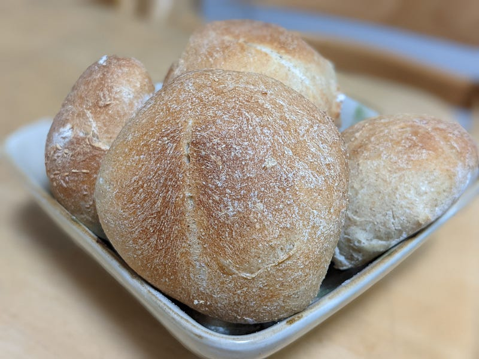
まぁ悪くない感じでパンはできてましたけど、正直今から考えるとこのころのパンはひどかった…
パンを作り始めて1か月くらいすぎた。1週間に2～4回パンを焼いている。色々学びがあったので主に個人のメモとして、初心者の試行錯誤のログとしてのメモ（なので間違っていることもあるかもしれません）medium.com
これらのパンを練習している間にサワードウとはなんなのか、工業イーストを使ったパンとどういうふうに作業工程が違うのか等を調べました。一番参考にしたのは以下の動画：
あとこっちの動画をはじめとする、この店舗の動画はパンの成形をする場面が結構映っていたのでイメージトレーニングによかったです
そして色々調べているとサワードウにはイーストのかわりに酵母（スターター）が必要ということがわかったのでこのあたりの動画も確認して、小麦粉と水だけでできるということを認識したりしました。
あと他にも何個か動画を見て、スターターは沼だということがわかったのでそのあたりは感覚で適当にやるということで、とうとうサワードウづくり開始です。
右も左もわからないフェーズ
そんなわけでとりあえずスターターづくりから開始。ここからはほぼすべてのパンの画像記録があります！
で、私のスターターですが、私のは小麦粉と水を混ぜて小麦粉についている菌を培養するだけ。他には何もつかいません。
よくレーズンとか果物から酵母を作る手順が検索にひっかかるけど、うちではこの小麦粉にそのまま発酵してもらったスターターを今でも使い続けています。
粉と水半々のペーストを作って、これを乾かないようにしつつ約三日間室温で発酵し続けます（酸素が必要なので蓋をしっかり占めるのはNG）。
発行期間中は半日に一回、ペーストの半分をすて、新たに捨てた分と同量の粉と水を入れて混ぜる、を繰り返します。
基本的には見た目には発酵が進んでガスが醸成されるので、その分ペーストが膨らむのと、乳酸菌の酸味のする匂いとともに発酵臭がする意外はあまり変わらないはずです。変なカビとかが生えてたらもちろんだめですが、多分該当部分だけを取り除けば大丈夫だとは思います。
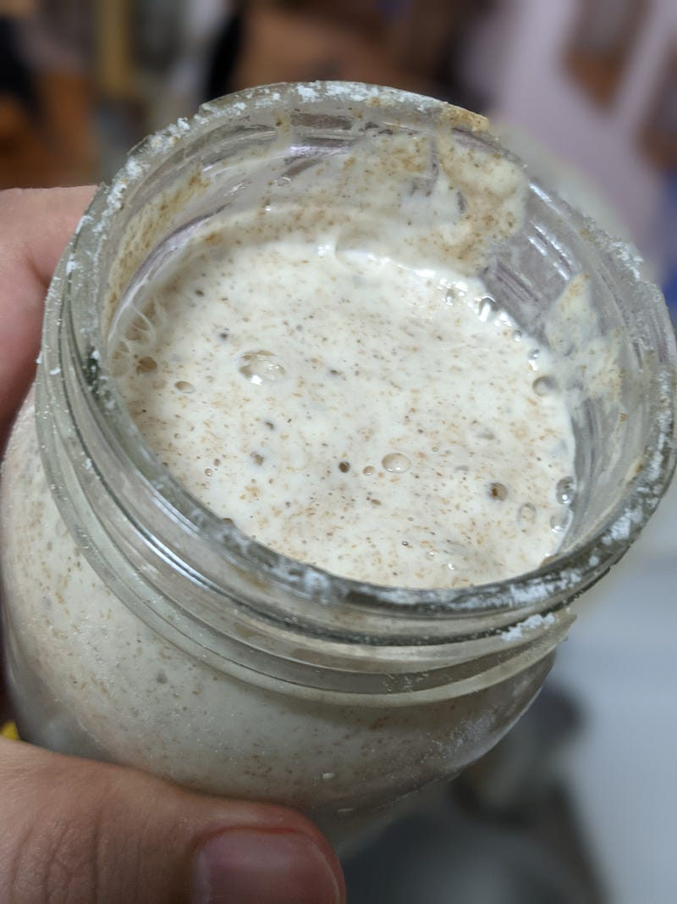
このペーストが酵母ないしスターターと呼ばれるもので、こいつは１週間に１回程度、新たに粉と水を追加し続けつつ、冷蔵庫に入れておいて半永久的に使い続けられます。
ちなみにポリシーとして「どこに引っ越しても現地のスーパーで手に入る材料だけで料理できるようになりたい」というのがあったので、時々他の粉が安売りしていた場合をのぞいて材料の強力粉は常にニップンのイーグルを使っています。最初こそスーパーで1kgずつ買っていましたが、いつのまにやら2.5kgの袋を何個も同時に購入して富澤商店の上客になってしまいました…
で、記念すべき最初のサワードウがこれ。まぁひどいですね。どれだけ捏ねればいいのかわからないし、どうなると発酵しおわってるのかもわからなかったし、さらに器具がないので無理やり焼いてた。
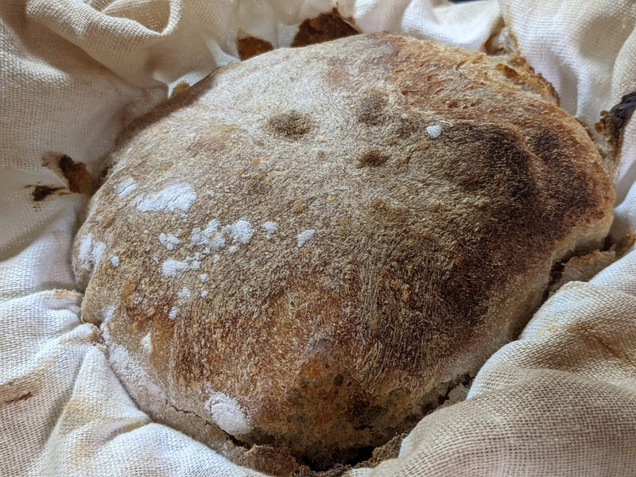
2回目からもしばらくは、一応焼きあがるものの、かなりひどい状態のクラスト。ちゃんと発酵できてなくてどちらかというと溶いた小麦粉を焼いた、みたいな感じです。
ちなみにこのころはダッチオーブン的なものを持っていなかったので、オーブンの中にお湯を張って云々して焼いていたし、まだ手で捏ねてました。
そのせいかなかなか焼き加減が安定せず、なんか焼けてるのか焼けてないのかよくわからない感じのパンができあがってきてました。
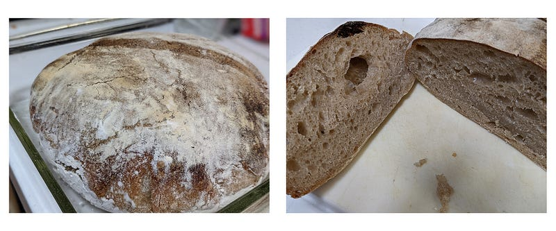
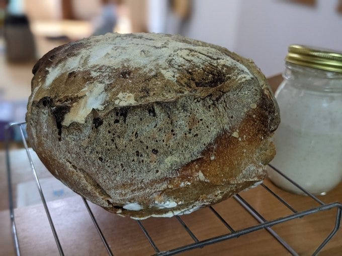
4回目でとうとうル・クルーゼ購入です。わざわざ外側の加工がないヤツを買って、なおかつ持ち手がオーブンの温度に耐えられるように金属製のものに変えました。
Amazon.co.jp: ルクルーゼ ココット オーバル ホーロー 鍋 IH 対応 27cm マットブラック 2102-27-00 : ホーム＆キッチンamzn.to
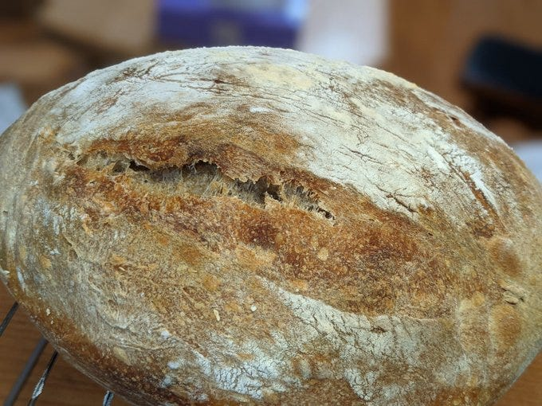
まだまだこのころは正しくこねられているのか等がよくわかっていませんでしたが、味はだんだん希望の味に近づいてきていた感じです。しかしまだまだグニグニとした食感のパンでした。
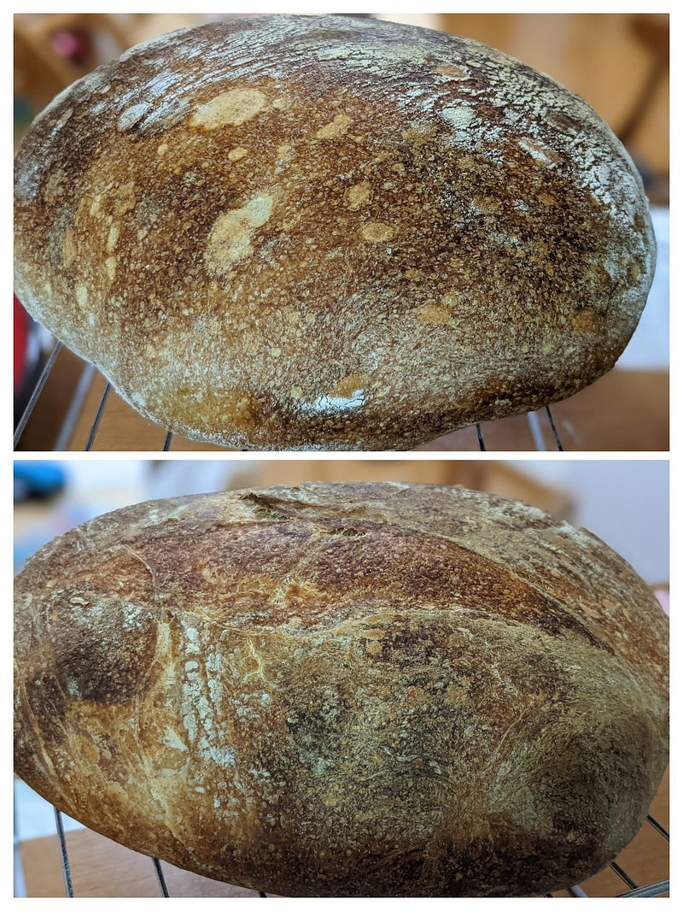
七回目のパンなんかは自分ではよくできたつもりでいたけど、ひどいクラストですね。もっとキメ細かい生地が焼けるようになった今となってはあまり食べたくないパンだ…
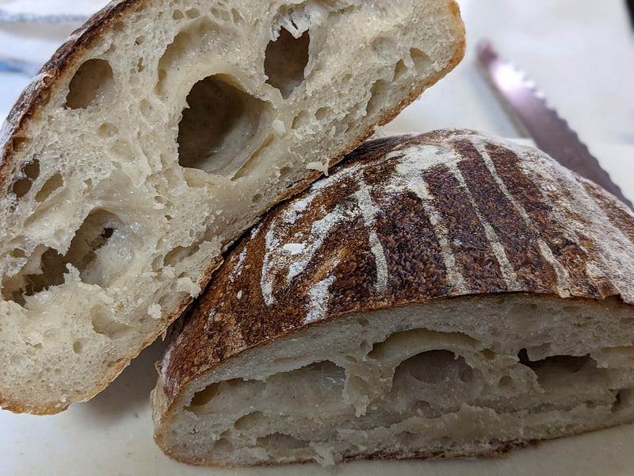
スタンドミキサー革命
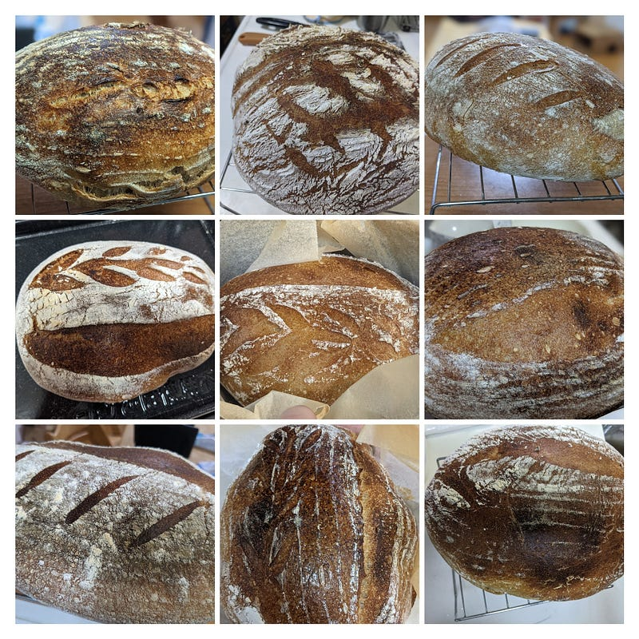
パンを鋳造鍋の中で焼く方法に切り替えたところで焼きは安定したのですが、何回やってもわからなかったのが「どこまで捏ねると正しい生地の状態になるのか？」でした。
まだまだ下手な間は手でこねるのは時間がかかり、正解がどこかわからないので効率的な作業ができずに気がつくと生地がひどい状態になっている、みたいなことがよくありました。
そういうわけでそもそも正解を知らずに作業できるかああ！となった私は真剣にスタンドミキサーを調査しはじめ、調査が終わった頃にちょうど妻から誕生日プレゼントに何がほしいか聞かれたので間髪入れずに「Kitchen Aidのスタンドミキサー！」と返したのです。
【日本国内正規輸入品】 キッチンエイド KitchenAid 3.5QTスタンドミキサー+フードグラインダー 特別セット KSM3512FGHT…amzn.to
私、結婚してからの間正直ほとんど誕生日プレゼントをねだったことなどなかったのですが、これは高い買い物だったため、なんらかの後押しが必要だった… というわけでこれでスタンドミキサーが手に入りました。
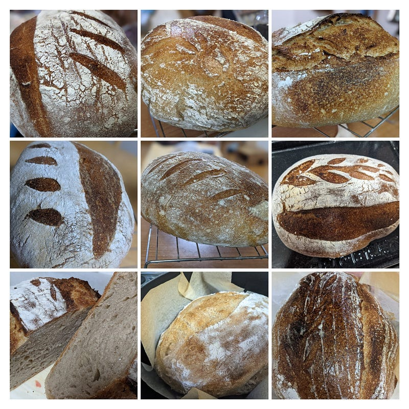
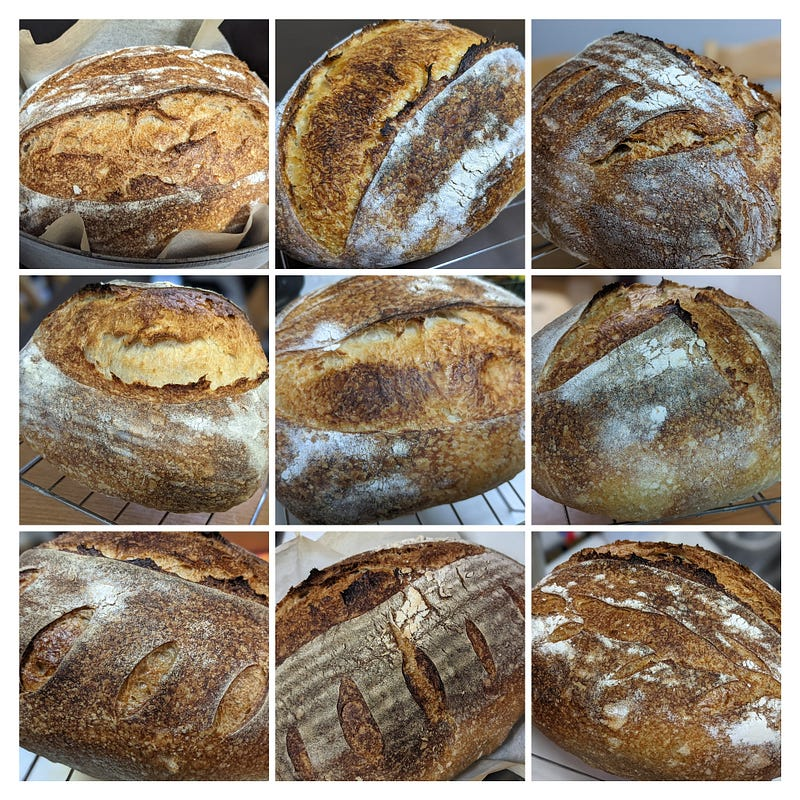
パン生地の捏ね方とかも沼ないし宗教戦争になりがちなのですが、とにかく自分は捏ねているとパン生地が変化するらしいが一体どの時点でどのように変わって、どのあたりで止めるべきなのか？が知りたかったので機械に頼ることが最善の策だったと今でも思います。
ここからはスタンドミキサーのおかげでどんどん作業時間が短縮されていき、量産が楽になっていきました。
ただそれでも正解を得るためには何回も焼いてみて少しずつ条件を変えるなどしながら観察する必要がありました。また、特に夏場だとスタンドミキサーを使ったときにどうしても摩擦熱によってパン生地の温度が上がってしまうため、正解を探すうちにパン生地全体がだれてスターターになってしまう、というようなこともありました。
しかし捏ねが安定してきたので中身もよい感じのものができあがるようになってきました。以下の26回目なんて7回目と比べたら雲泥の差ですね。
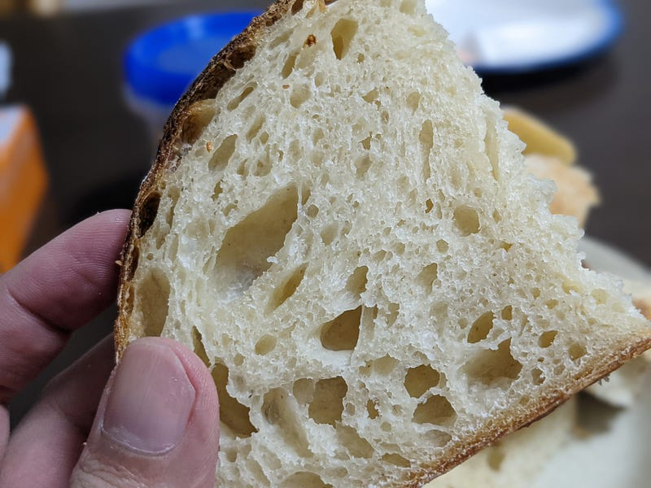
この下あたりは１年目の秋以降のパンです。夏に悪戦苦闘していたこととは逆に今度は発酵が進まずに苦労した記憶があります。この時期は少し慣れてきたこともあって何回かポカをした記憶があります。多分塩が全く入ってないパンを２回くらい作ってしまったのもこの頃です。
みなさん食べてるだけでは意識してないかもしれないのですが、塩の入ってないパンって心底まずいんですよ…
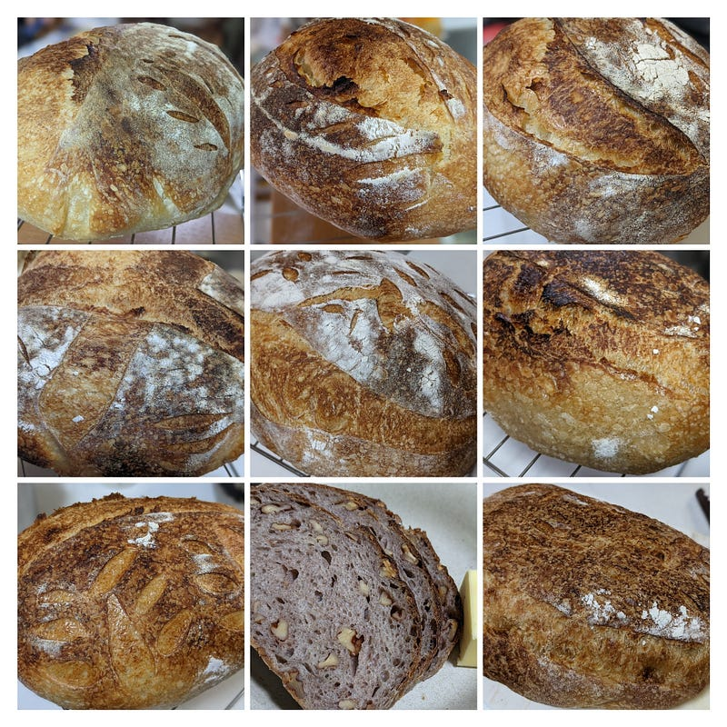
安定期
そしていつのまにか１年近くが過ぎました。 この頃にはさすがにパン焼きも安定し始めて、時々会心の出来と呼べるものもでき始めています。この頃からそれまで主に自分が中心になって消費していたサワードウを子どもたちにも食べさせてもいいだろう、というくらいの自信がでてきたので家族全員で食べ始めました。おかげでパン焼きがはかどりました。
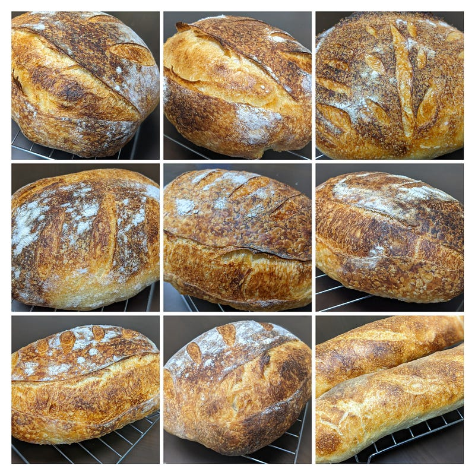
安定してきたのでこのあたりから今度は焼き上がりの状態を制御する方法を模索しはじめます。
それだけ切り離して語ることはできませんが、ここでは１次発酵の時間、成形、成形後の発酵、このあたりの工程でその日の温度や生地の状態などからどう調整するべきかを考えながら焼いていきました。
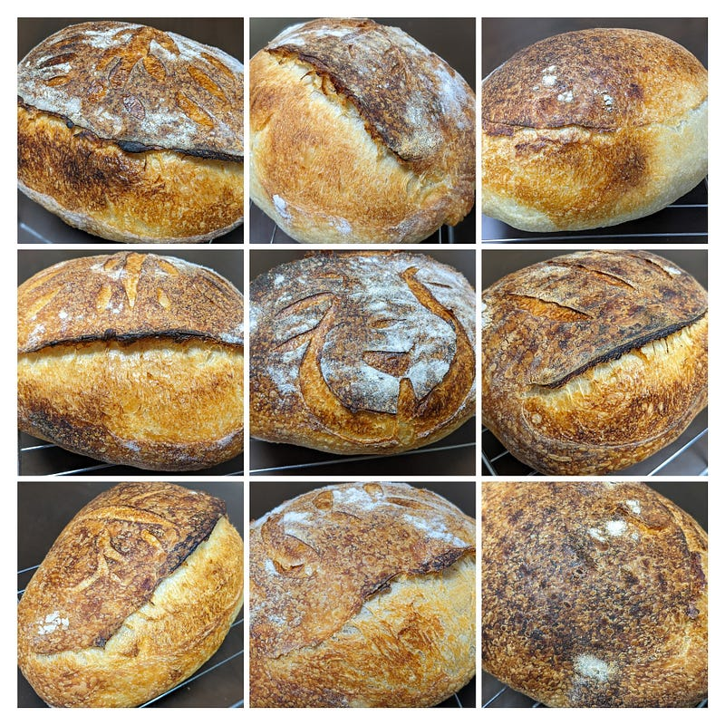
ただ、この時期になってもまだパンの焼き上がったあとにパンの底の部分に一部だけグニグニ食感の生地が残ってしまう問題がありました。何を変えてもなくならないため頭を悩ましていました。
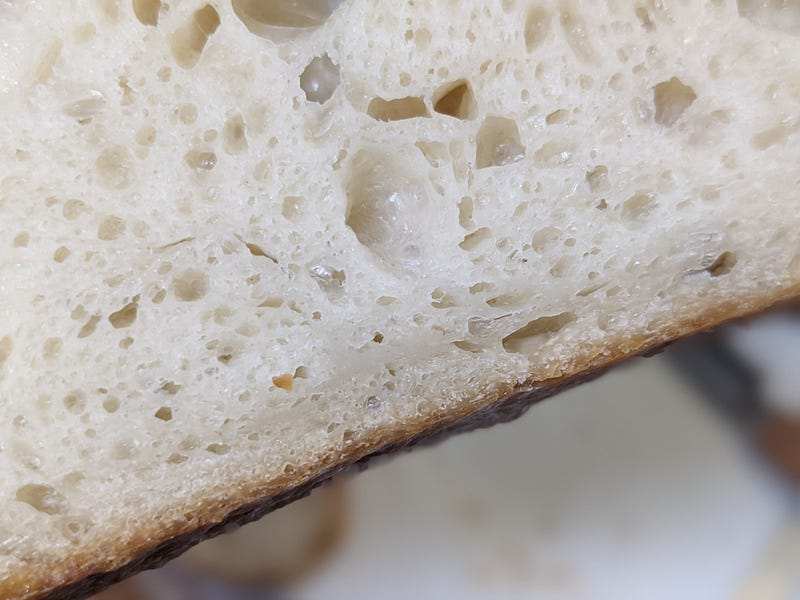
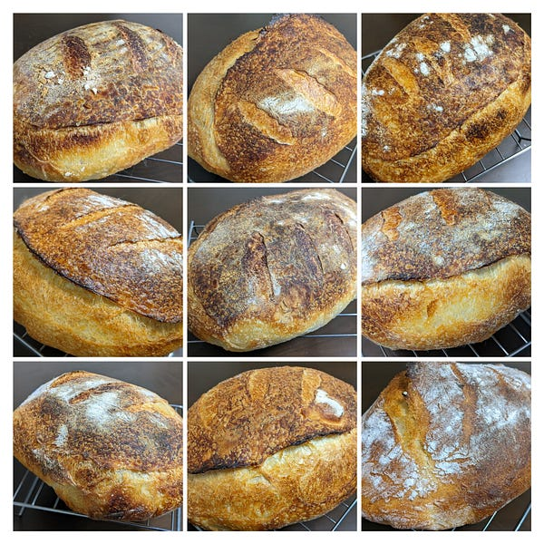
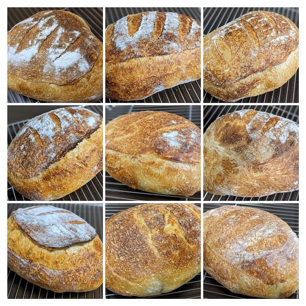
２年目の夏はもう完全に毎回必ず食べられるパンを作れるようになっています。この頃はさすがに家族も飽きてるだろうと思い、食パンやちぎりパンなどにも手を出しています。
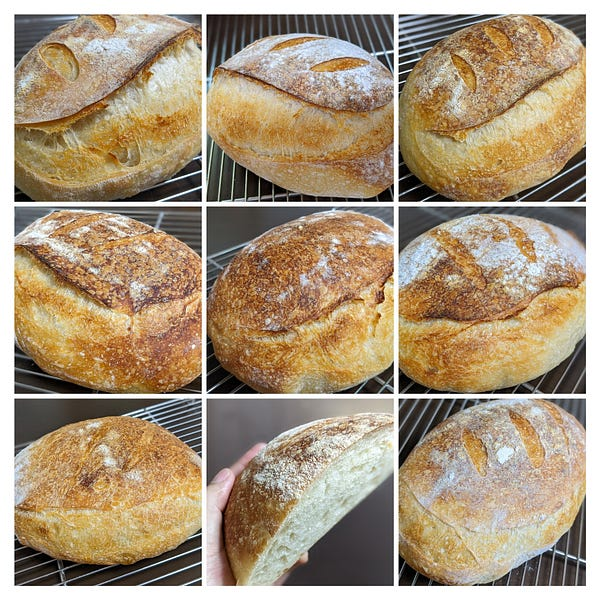
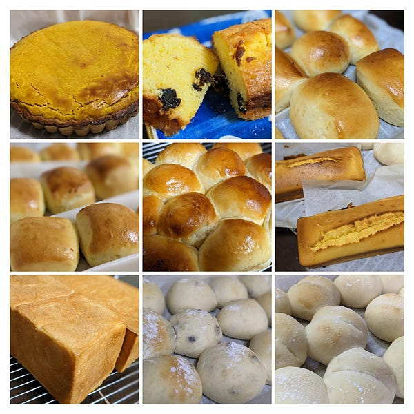
夏から秋にかけての時期にとうとうパンの底のグニグニ問題の理由がわかりました。パンの成形をする際に、パンの底にあたる生地を傷を縫うようにくっつける、という作業があるのですが、この作業を行った後に十分追い発酵をしないとつなぎ目の部分に気泡ができずにグニグニ食感でやきあがってしまっていたようです。
ちゃんと生地を休ませてから底を成形し、その後ある程度時間をかけて追い発酵をすることでグニグニはなくなりました。
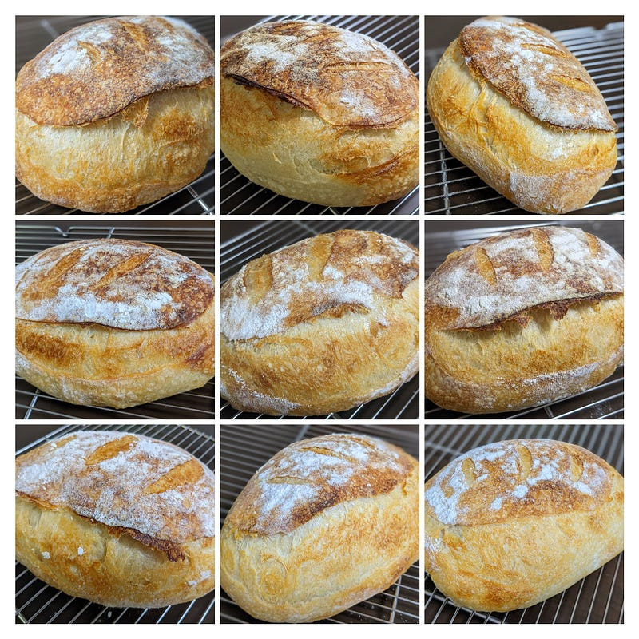
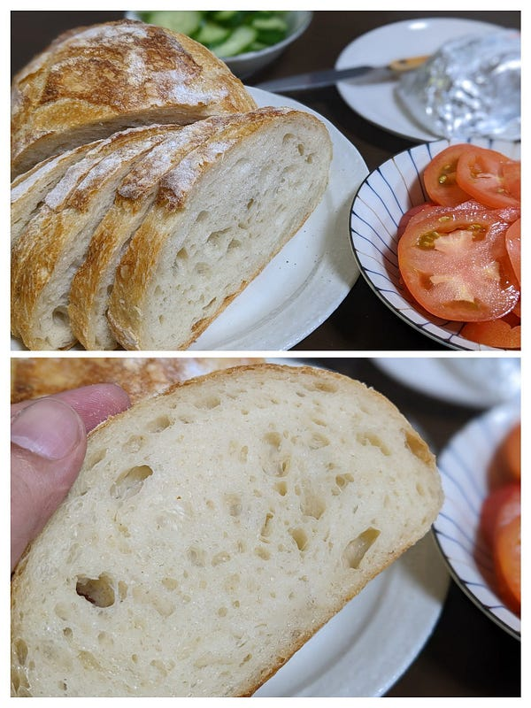
そしてラストスパートの２年目の秋・冬。このあたりはもう淡々と作っています。特に冬になって生地の状態が少し変わってくると水分量の微調整などもできるようになってきました。
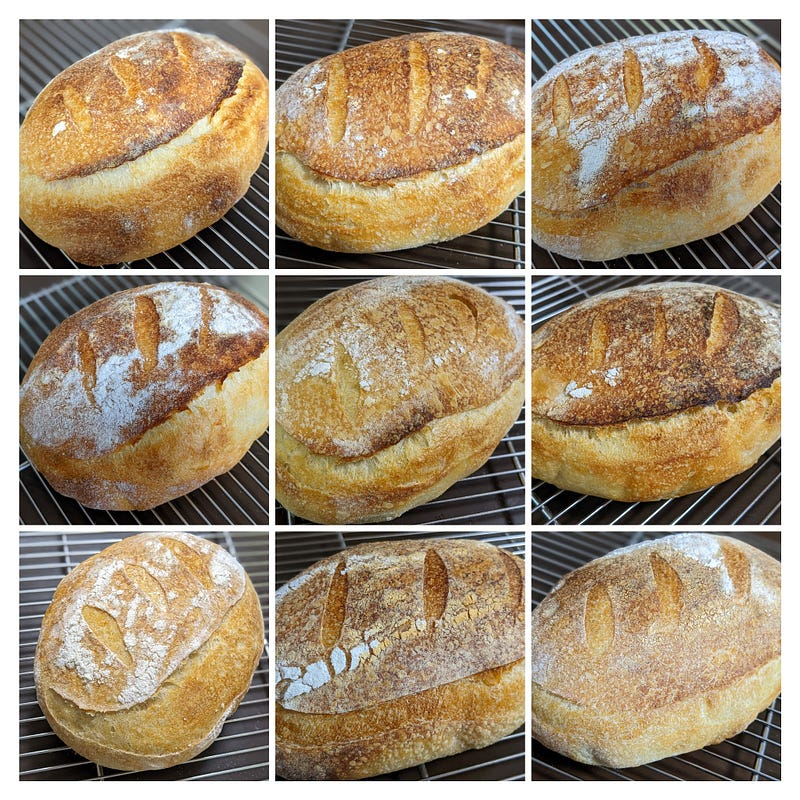
100個目のサワードウを焼いたのが2022年12月25日。今焼かないと2022年中に100個に到達できないかもと焦ってしまって時間がないなか作ってしまったので見た目がちょっと微妙な出来でした。残念ながら「100個目がこれまでで最高のサワードウだった！」とはなりませんでした。が、味は全く問題なく、最初のほうによくあったグニグニのクラスト問題も一切見当たりません。
というわけで2021年5月に始めたときの最初の目的であったサワードウを100個焼く、は2022年12月末に完遂できました。
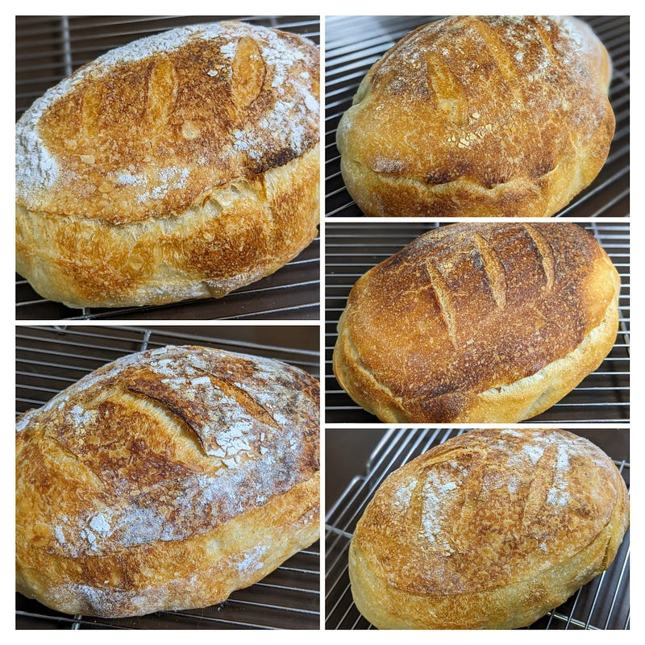
サワードウの生地1個につき500gの強力粉を使うので、この期間にサワードウのために強力粉50kg強を消費しました（が、あとは塩と水と少量のオリーブオイルだけでバター、牛乳、砂糖等は他には一切つかってません）。
やあ…使いましたね。すっかり粉ものと仲良くなれました。
これからももちろんサワードウは焼き続けるとは思いますが、少し頻度は落ちるかもしれません。この次はパイとかキッシュにちょっと手を出してみるつもりです。
もし皆様も小麦粉と塩と水だけで作るパンに興味があったら是非トライしてみてください！超おすすめです！
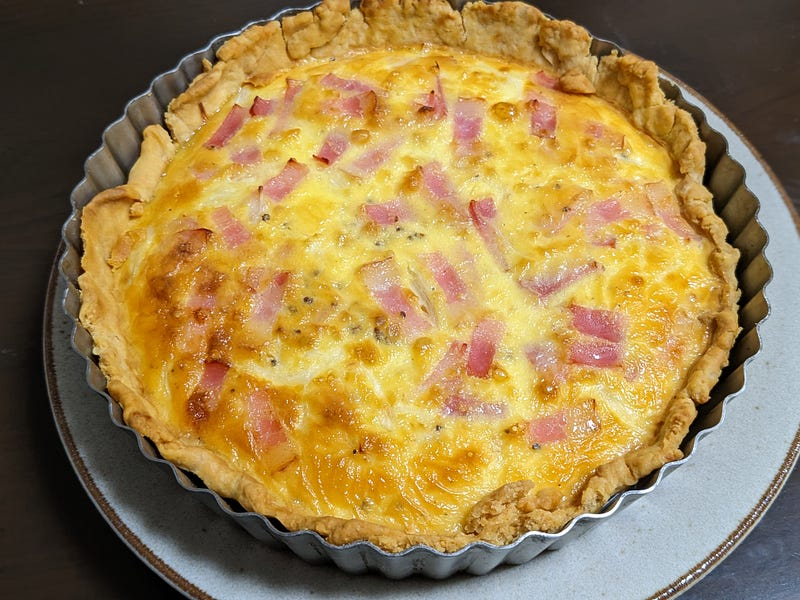